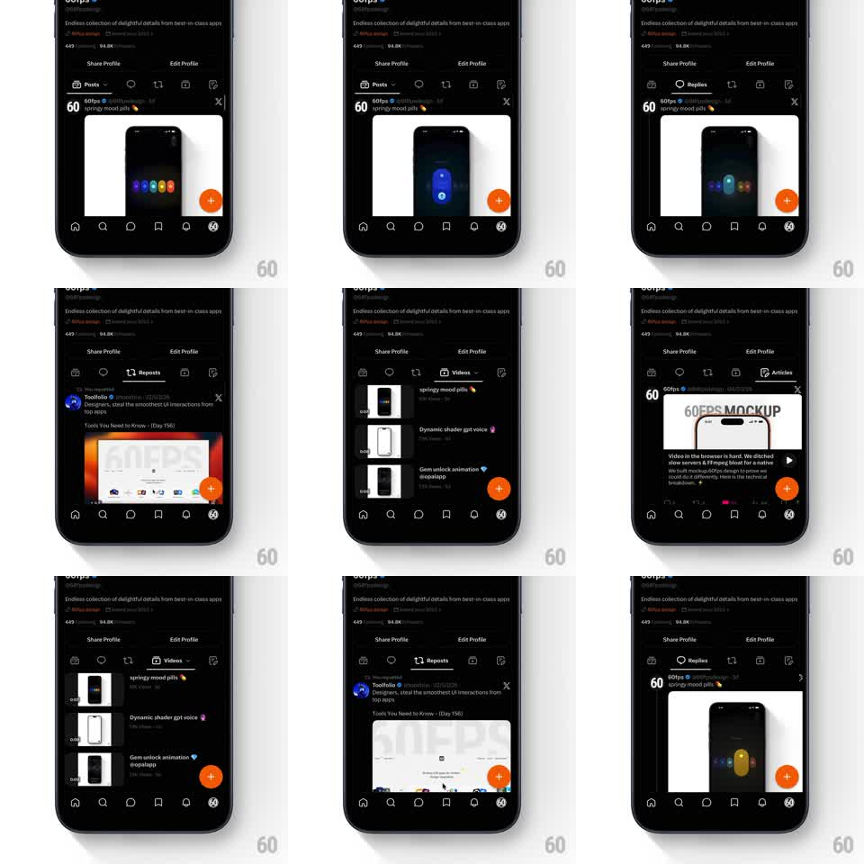

Media
Frame-by-frame

Rebuild this interaction 1:1: X's profile tab bar - swiping between content tabs morphs the active pill: the pill's width animates to hug the new tab's label, and labels expand from icon-only to icon + text as they become active.

Rebuild this interaction 1:1: X's profile tab bar - swiping between content tabs morphs the active pill: the pill's width animates to hug the new tab's label, and labels expand from icon-only to icon + text as they become active. ## Integration Integration: stack-agnostic spec - springs given as stiffness/damping, timed motions as duration + curve; map every value to your framework and animation library of choice. ## Scene Dark profile page: avatar, bio, action buttons, then a horizontal tab strip (Posts, Replies, Reposts, Videos, Articles - icons + labels), content below. The active tab shows a filled pill background with its full label; inactive tabs show icon-only (or dimmed short labels). ## Motion spec Pattern: swipe-synced tab morph. - Swipe on content: the pill slides horizontally tracking the gesture (1:1), stretching mid-transit (width interpolates between the old label's width and the new one, scaleX up to ~1.15 at max velocity). - Labels: the incoming tab's text expands (max-width 0 -> auto, characters fade with a 40ms-per-char stagger, 200ms) while the outgoing collapses to icon-only (150ms). - Release: pill settles over the new tab (spring ~320/26, ~300ms). - Content below crossfades with a slight slide (translateX 20px, 200ms). - Tap on a tab runs the same morph without gesture tracking. ## Calibration - Pill stretch is velocity-driven - a slow drag barely stretches it. - Text expansion is the delight; keep it under 250ms so the bar never feels busy. ## Reduced motion Pill jumps with a 150ms fade; labels swap instantly. ## Don't miss - The pill hugs label width + fixed padding - width is content-derived, not per-tab constants. - Icon and label are one morph unit; the icon never moves within its slot.